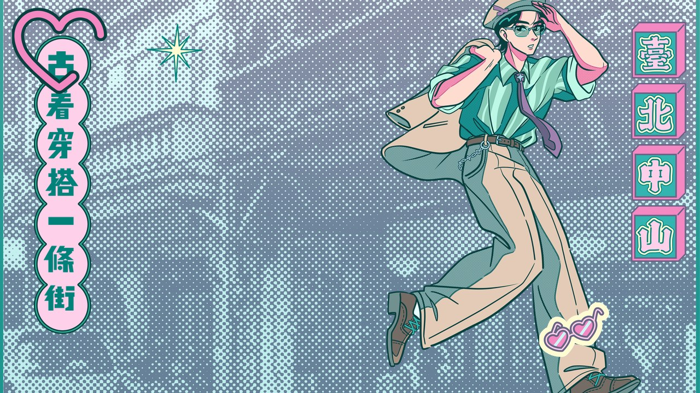
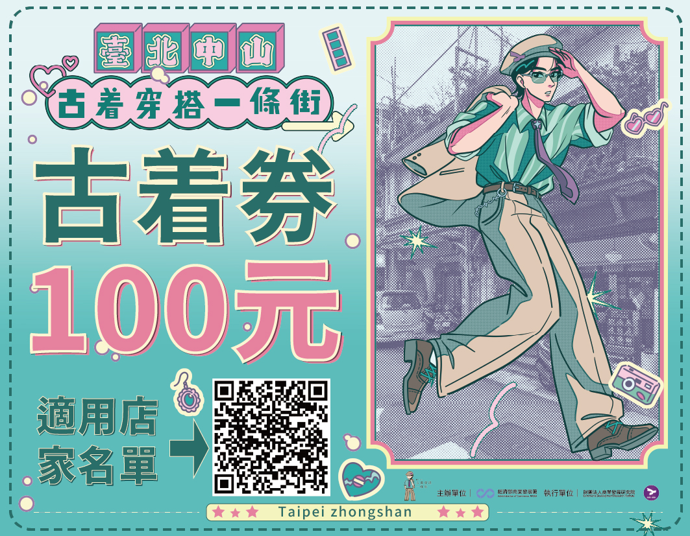
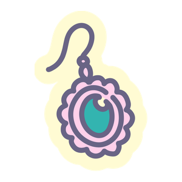
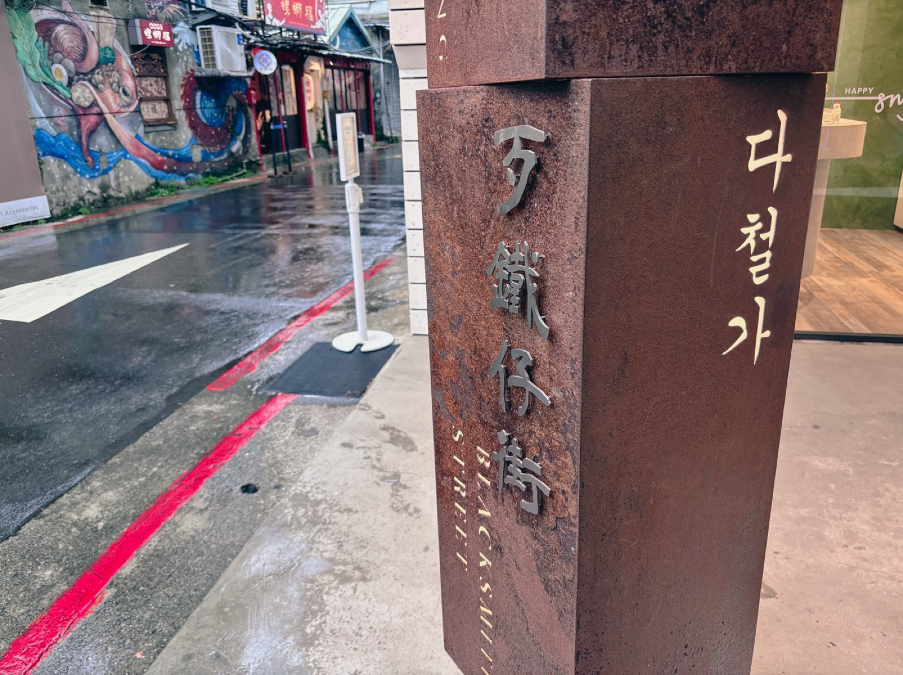
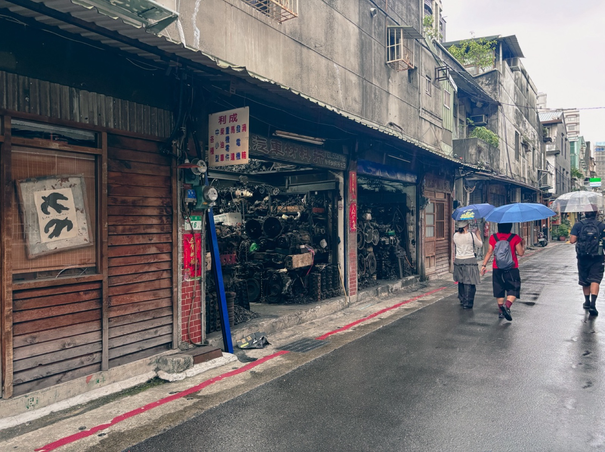
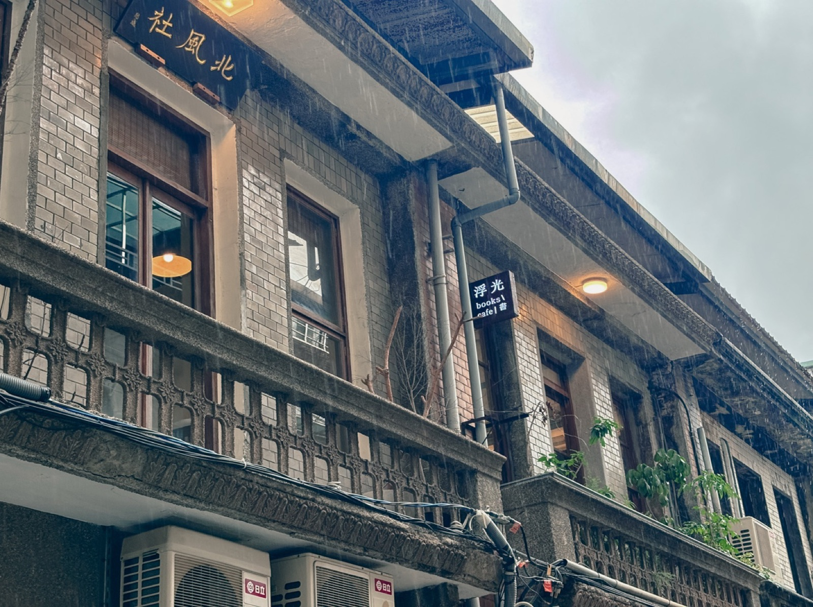
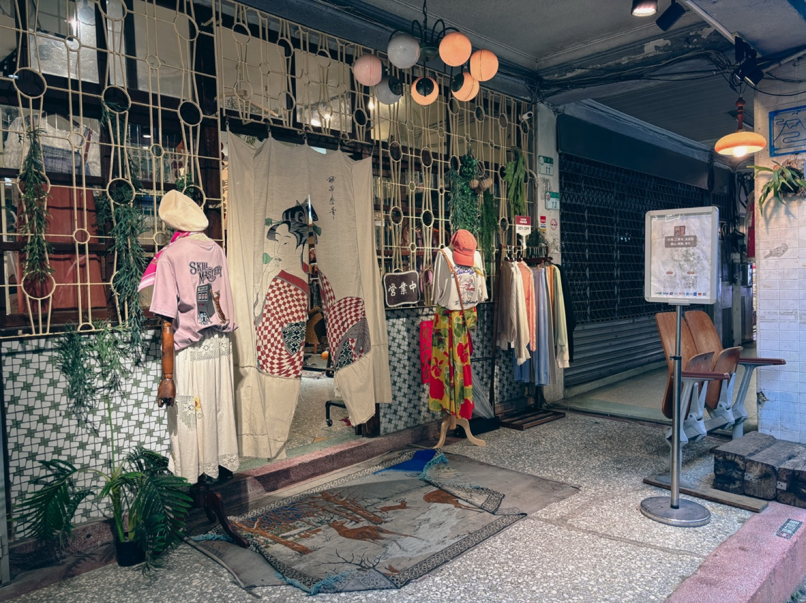
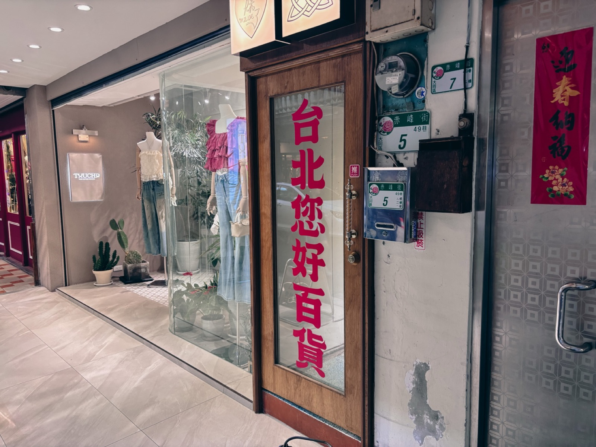

宣傳影片
一支影片，帶你快速認識這場橫跨三個月的古着穿搭盛會。

古着券介紹
配合臺北中山古着穿搭一條街活動，只要參加指定活動或完成任務， 就有機會抽中古着券，可於本次活動特約店家消費使用。
取得方式

可使用店家名單

街區介紹走進台北捷運中山站與雙連站之間的巷弄，你會感受到一種截然不同的時間流速。 城市的喧囂漸漸遠去，空氣中偶爾飄來機油的氣味，卻又夾雜著手沖咖啡的香氣； 耳邊聽見的，是老舊修理廠的金屬敲擊聲，以及隔壁文青小店流瀉出的音樂。
「這裡，是赤峰街。一條將『老台北的硬派』與『新世代的復古』完美揉合的傳奇街區。」

赤峰街舊名「打鐵仔街」
時光倒轉回半個世紀前，赤峰街的名字在老台北人的記憶裡，總是與「金屬」和「黑油」掛鉤—— 早年被稱為「打鐵街」或「汽車零件街」。台灣經濟起飛的年代，這裡聚集了無數五金行、 汽車零件行與廢五金回收廠，狹窄巷弄裡總停滿等待修理的車輛， 老師傅們用沾滿油污的雙手，支撐起一個個家庭，也推動了這座城市的齒輪。

巷弄裡仍在營業的老五金行
隨著產業結構轉型，重工業與修車廠逐漸外移，赤峰街的敲擊聲變少了， 留下一棟棟斑駁的老屋與空蕩的店面。大約十多年前，一群嚮往獨立、尋找創作空間的 年輕創業者走進這裡，看中的正是相對低廉的租金，以及台北市中心罕見的 「未經粉飾的真實感」。他們沒有把老屋拆除重建，而是保留了殘破的紅磚、 斑駁的招牌與生鏽的鐵門，小心翼翼地在「舊」的畫布上，點綴出「新」的色彩。
「赤峰街的魅力，在於它從不掩飾自己的老態，反而將歲月的痕跡當作最美的裝潢。」

老屋立面保留下來的花磚與洗石子牆
如果說咖啡廳為赤峰街帶來了人潮，那麼「古着店」的大量進駐， 則是為這條街注入了最契合的靈魂。從美式工裝、日系復古、歐洲軍品 到年代感十足的碎花洋裝，無數風格迥異的古着店在巷弄裡百花齊放。 古着的核心價值在於賦予舊衣物新的生命，而赤峰街的本質，正是老屋新生—— 當一件古着掛在保留著復古花磚的老屋裡，兩者之間產生了無可取代的化學反應。

巷弄裡的古着選物店
如今的赤峰街，是一座活生生的街區博物館。它沒有被徹底士紳化而失去原有的靈魂， 那些屹立不搖的老五金行，依然以長者的姿態，包容著穿梭其中的時髦男女。 當你穿上一件剛從赤峰街古着店尋到的衣服走出店門， 迎面而來的，是打鐵街傳承至今的微風。

赤峰街上的特約店家之一「台北您好百貨」